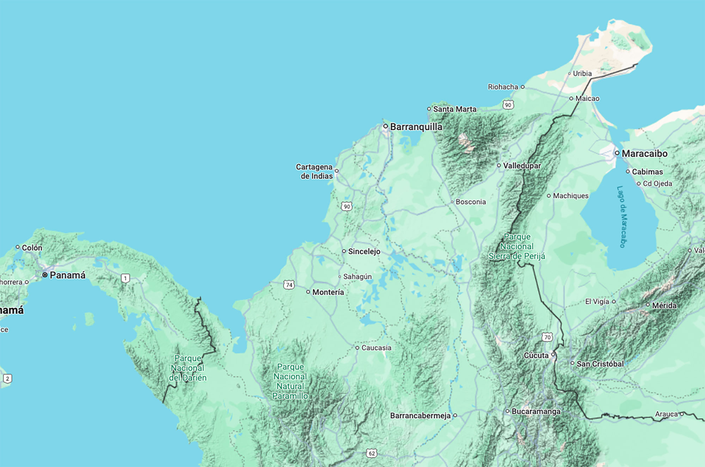

Las especies más comunes en la región son Ischnura ramburii (112 registros), Erythrodiplax umbrata (79) y Erythrodiplax fervida (65). Estas especies tienen un amplio rango de distribución geográfica y son particularmente resistentes a transformaciones en sus hábitats.
